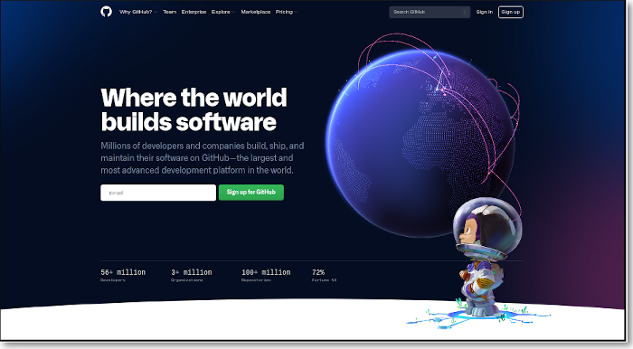
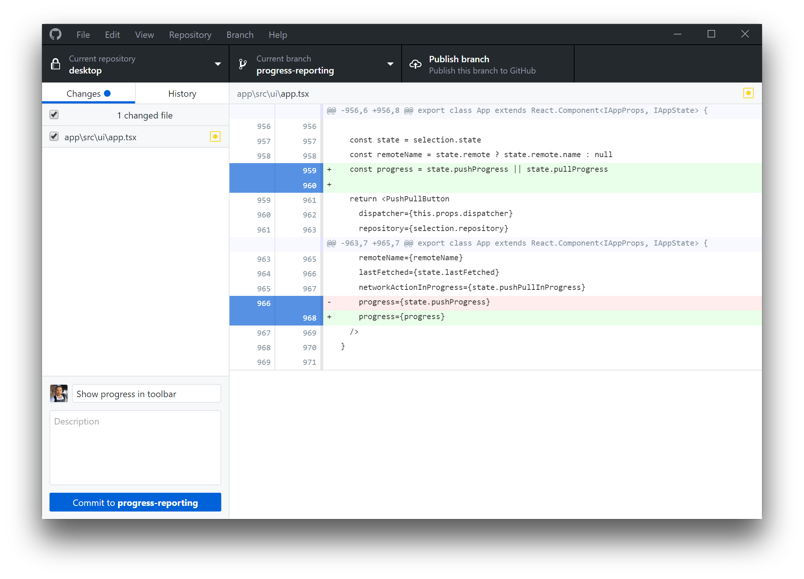

name: default-page layout: true background-image: url("fablabsp_icon_100px.png") background-position: 98% 2% --- name: inverse layout: true class: center, middle, inverse --- class: center, middle # Project Documentation .footnote.pull-right[[Website Development](https://rdorville.github.io/EP1000/04_web_development.html)] --- template: default-page layout: false # Documentation .left-column[ ## Definition ] .right-column[ Definition: from [dictionary.com](https://www.dictionary.com/browse/documentation) ### [What is documentation and its techniques?](https://www.slideshare.net/sangi/what-is-documentation-and-its-techniques) ] --- template: default-page layout: false # Documentation .left-column[ ## Definition ## Why Document? ] .right-column[ ### .blue["If You Didn't Document It, It Didn't Happen"] ### Requirements: - Fieldwork - Training in transcribing experiences - Recording of experiences ] --- template: default-page layout: false # Documentation Techniques ### What to collect? - Written text - Images (Photos, Videos, Drawings) - Sound (Recordings) ### Purpose - aim to .blue[collect] information - create high quality materials - enable recovery of knowledge - generate resources on the information ### Dependent on what you want to record - convenience - portability - relevance - pros and cons --- template: default-page layout: false # Exercise ## How would you document - what you told someone - the posting of a letter - a payment for an item - an accident - a project ## Where would you put all this information? --- template: default-page layout: false # Project Documentation ## Requires - text descriptions - images - photos, drawings, sketches - video - audio -- ## Best Methods - Easy to learn and use - Easily accessible, updateable - Able to store all of the above - Archivable -- .blue[## Post on WWW in a shareable/archivable location] --- template: default-page layout: false # Best Solution ## Use .blue[PURE] text - No need for special editors - Reable across all platforms -- ## Publish on the WWW - Use HTML - defines content - Use CSS - defines layout - Use Markdown -- ## Archivable/Shareable location - github sites - gitlab sites -- ### Why .bold[NOT] use [WIX](https://www.wix.com/) ? --- template: default-page layout: false # Pure Text Editors ### Why not Microsoft Word / WordPad / LibreOffice ? - Word Processors - Have different formatted files with binary/inserted code - May be difficult to read cross-platform ### Recommended Text Editors - [Notepad++](https://notepad-plus-plus.org/) - [Github Atom](https://atom.io/) - [Sublime Text 3](https://www.sublimetext.com/) - [Visual Studio Code](https://code.visualstudio.com/) ### Advantages over other text editors - Unlimited Text Length - Syntax Highlighting - Text Enhancements - Scripts - Open Source/Free, Cross Platform .footnote.pull-right[Windows Users should look at [Portable Apps](https://portableapps.com/)] --- template: default-page layout: false # HTML - Hypertext Mark-Up Language - language of the WWW, the building blocks - text-like with MarkUps e.g. Bold : < B >Bold Text < /B > - allows links (pointers) to other sites/material/images/video/audio ```html <!DOCTYPE html> <html> <head> <title>Page Title</title> </head> <body> <h1>This is a Heading</h1> <p>This is a paragraph.</p> </body> </html> ``` [HTML Explained](https://www.w3schools.com/html/html_intro.asp) Reference: [W3Schools HTML Tutorial](https://www.w3schools.com/html/default.asp) --- template: default-page layout: false # HTML Editors - HTML is text, and can be edited using any text editor. - Use HTML Editors - Adds functionality - Reduces tedium of markup tags - WYSIWYG features - Online HTML Editors - great for checking work - [4html.net](https://4html.net/HTML-editor-871.html) - [Best Online HTML Editor](https://bestonlinehtmleditor.com/) # Tutorials - Lots of tutorials available on WWW and YouTube - No need to be an expert - Working knowledge is sufficient --- template: inverse layout: false # Getting Started <br> ## Choose a text editor ## Watch Jake Wright - [Learn HTML in 12 minutes](https://youtu.be/bWPMSSsVdPk) <br> <br> .footnote.pull-right[30 minutes] --- template: default-page layout: false # How much HTML should I learn? ## .blue[Not All] ## Recommended - [Elements](https://www.w3schools.com/html/html_elements.asp) - [Attributes](https://www.w3schools.com/html/html_attributes.asp) - [Headings](https://www.w3schools.com/html/html_headings.asp) - [Paragraphs](https://www.w3schools.com/html/html_paragraphs.asp) - [Style](https://www.w3schools.com/html/html_styles.asp) - [Formatting](https://www.w3schools.com/html/html_formatting.asp) - [Comments](https://www.w3schools.com/html/html_comments.asp) - [Colors](https://www.w3schools.com/html/html_colors.asp) - [Links](https://www.w3schools.com/html/html_links.asp) - [Bookmarks](https://www.w3schools.com/html/html_links_bookmarks.asp) - [Images](https://www.w3schools.com/html/html_images.asp) - [Tables](https://www.w3schools.com/html/html_tables.asp) - [Lists](https://www.w3schools.com/html/html_lists.asp) - [Layouts](https://www.w3schools.com/html/html_layout.asp) --- template: inverse layout: false # .green[About Page] <br> ## Create your ABOUT page using HTML .footnote.pull-right[30 minutes] --- template: default-page layout: false # Create your "ABOUT" page ### Must have - Sections or divisiions - Provisions for a navigation bar (to select other pages) - Your photograph - Two paragraphs saying something about yourself and your hobbies - One paragraphy stating why you are in the DigFab Program - A copyright notice and/or links to Facebook, Twitter, YouTube - Save file as ".bold[about.html]" ### Optional - Decoration - Color - Nice layouts --- template: default-page layout: false # GitHub ### [Github](https://github.com) - A website and cloud-based service that allows developers to store and manage their code, as well as track changes to their code. - Allows you to host public accessible static web-pages.  --- template: default-page layout: false # Github ### - Repository for your code ### - Allows you to host GitHub Pages ### - Version Control ### - Git # Create an Account - Use your email - Remember your passowrd - Confirm your account (Verify with Email) --- template: default-page layout: false # Github Repositories/Projects .left-column-60[ ] .right-column-35[ - Keeps your project information - Give it a name - Needs to be public - Add a README for a start - Optional: License ] --- template: default-page layout: false # Github Repository <img src="test_repository.png" style="width:700px"> --- template: default-page layout: false # GitHub Pages .left-column[ ### Settings - Scroll down until yout see .blue[GitHub pages] - Allows you to host this repository as a website - Select branch as .blue[Main] ] .right-column[ ] --- template: default-page layout: false # Your Website - Displays contents of README.md - Upload your .blue[about.html] and rename it as .blue[index.html] - Refresh site ### Github Pages loads 1. index.html / index.md 2. README.md --- template: default-page layout: false # CSS (Cascading Style Sheets) ### HTML provides content ### CSS provides display formatting information Ref: [W3Schools CSS Tutorial](https://www.w3schools.com/Css/default.asp) --- template: default-page layout: false # Learning CSS ### No need to go in depth ### Sufficient to understand how it is applied --- template: inverse layout: false # CSS ## Watch: [Learn CSS in 12 minutes](https://youtu.be/0afZj1G0BIE) ## Apply & Upload your site to Github .footnote.pull-right[45 minutes] --- template: default-page layout:false ## Task Details ### - Watch: YouTube: Jake Wright [Learn CSS in 12 minutes](https://youtu.be/0afZj1G0BIE) ### - Convert and upload your site to Github Pages to include - a Start Page, outlining your site - a Project Page, which should be a template for work pages - an About Page, which says something about you. - a CSS style sheet .footnote.pull-right[You can use Jake Wright's template & CSS] --- template: default-page layout: false # Version Control ### Helps developers .blue[track] and .blue[manage] changes to a software project (code as well as activities). ### Version control lets developers work through .blue[branching] and .blue[merging] ## Branching - duplicates part of a project to try changes - can abandon and ignore changes - changes do not affect the main project ## Merging - allows a branch to be added/overwrites the main code safely - can recover if a mistake occurs --- template: default-page layout: false # Git ## Open-source Version Control System ### - Distributed (available across a network) ### - Works with GitHub ## Installation - [GitHub Site](https://git-scm.com/) - Usually Command-line driven - Windows has a GUI - [Windows Desktop](https://desktop.github.com/) ### Great Book & Reference: [Pro Git](https://git-scm.com/book/en/v2) ### Lots tutorials online - [Git & GitHub Crash Course For Beginners](https://www.youtube.com/watch?v=SWYqp7iY_Tc) --- template: default-page layout: false # Git Workflow --- template: default-page layout: false # Configure Git ```bash $> git config --global user.name "Rodney Dorville" $> git config --global user.email "rdorville@dont.mailme.com" ``` ### You will still need to enter your git-password to authorise the operations --- template: default-page layout: false # Git init / clone .left-column-50[ ### It is easier to 1. Create a respository in GitHub 2. Clone the respository to your local PC ### You can clone ANY public repository! ### Destination folder: Project name ] .right-column-50[ ] --- template: default-page layout: false # Making Changes & Updating ### Making changes and updates - Update local site. - Make changes, additions, deletions - Add your changes to the local store - Commit your changes to the local repository - Push to the remote repository ```bash $> git add * $> git commit -m "updated x,y,z files" $> git push ``` --- template: default-page layout: false # Checking for updates ### Should be done each time you work on your project - Checks if the Remote repository was updated - If so, brings down the updates - Allows you to overwrite/keep-local changes - Syncs local with remote repository ```bash $> git pull ``` --- template: default-page layout: false # Github Desktop  ### - YouTube: Gamefromscratch [GitHub Desktop 2.0 Easy Mode Version Control](https://youtu.be/S7f8qJscmRE) ### - Alternative GUI method for Windows or Mac users --- template: inverse layout: false # Git ## On-line Git tutorial .footnote.pull-right[15 minutes] --- template: default-page layout: false # Task 1: Git ## Work through ONE online tutorial on Git ### Youtube videos on Git - Colt Steel [Learn git in 15 minutes](https://www.youtube.com/watch?v=USjZcfj8yxE) - The Net Ninja [Git & GitHub Tutorial for Beginners](https://www.youtube.com/playlist?list=PL4cUxeGkcC9goXbgTDQ0n_4TBzOO0ocPR) - Cory Schafer [Git Tutorial for Beginners: Command-Line Fundamentals](https://www.youtube.com/watch?v=HVsySz-h9r4) - Traversy Media [Git & GitHub Crash Course For Beginners](https://youtu.be/SWYqp7iY_Tc) ### Git Online Tutorials - [Got 15 minutes and want to learn Git]https://try.github.io/ - Better Explained [A Visual Guide To Version Control](https://betterexplained.com/articles/a-visual-guide-to-version-control/) - Roger Dudler [git the simple guide](http://rogerdudler.github.io/git-guide/) - Tower [Learn Version Control with Git](https://www.git-tower.com/learn/git/ebook/#start) --- template: inverse layout: false # Apply Git ## Apply Git to Your Github Site .footnote.pull-right[15 minutes] --- template: default-page layout: false # Task 2: Use Git on Your Github Site ## Apply Version Control (Git) to your Github Site ### - You may work with Github Desktop ### - Document how to work with Github Desktop ### - Examples: - Instructables: [Introduction to Github](https://www.instructables.com/Introduction-to-GitHub/) --- template: default-page layout:false # Markdown ## - Simple syntax that formats text ## - Less complicated than HTML ## - Used to document software projects -- <br> ## .blue[Why learn HTML & CSS ?] ### - Markdown uses HTML & CSS ### - What you can't do, do it in HTML & CSS <br> ### Learn it in 15 minutes or less --- template: default-page layout:false # Learning Markdown ### - Online [Demo](https://learnmarkdown.com/) ### - [Cheatsheet](https://www.markdownguide.org/) <br> ## It is .blue[EASIER] to document with Markdown ## However, - Poor formatting characteristics - Poor styling - Very text-like, basic style <br> ## What you can't do, do it in HTML & CSS! --- template: inverse layout: false # Create your Documentation site ## Document how to use Windows Desktop --- template: default-page class: center, middle # Project Documentation ### [End]